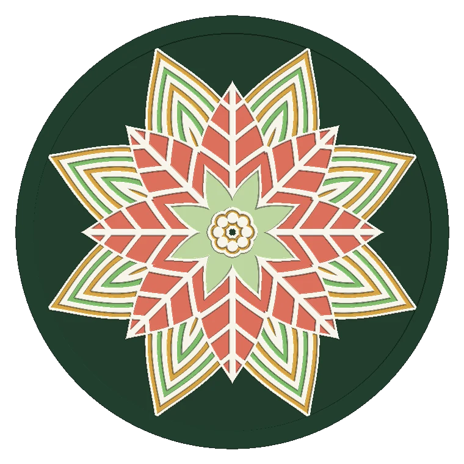

Você desenha a mandala.A impressora pinta.
Filete em alto-relevo represando poças de esmalte, no navegador. Sai um 3MF que o Bambu Studio abre com cada cor já no extrusor certo — sem diálogo de importação, sem acertar nada à mão.

Camadas empilhadas, não um desenho só
Sete motivos — folha, gota, arco, ponto, cunha, losango, anel — repetidos pela simetria que você escolhe. Cada camada tem sua faixa de raio, sua fase e seu preenchimento.
A ordem da pilha é ordem de pintura: quem está por cima cobre quem está embaixo. É o mesmo modelo mental de quem desenha em papel vegetal sobreposto.
O fio sobe e represa o esmalte
Cloisonné é isso: um fio de metal em alto-relevo cercando cada forma, e a tinta acumulada no miolo rebaixado. Aqui o fio é geometria, com largura e altura em milímetros.
A altura não vem de um campo somado. Cada motivo sabe onde está sua borda, por distância assinada, e é isso que permite contorno elevado, contornos aninhados e nervuras internas.
A cor entra onde o fio deixou
Nove paletas prontas, ou a sua. Trocar de paleta preserva o desenho: cores iguais continuam iguais, e a placa e o filete vão para o par escuro/claro.
Passou dos quatro slots do AMS? Um botão funde os pares mais parecidos em Lab, que é o que o olho enxerga, até sobrar o número que você pedir. O filete nunca é fundido.
Um sólido fechado por cor
A malha não sai por grade, que deixaria a borda em escada. Sai por curvas de nível: cada cor vira um sólido fechado próprio, com borda lisa e estanqueidade verificada.
São essas seis peças que o 3MF manda para seis extrusores. A associação é escrita no arquivo, não deduzida pelo fatiador.
O fatiador abre e entende
Estes números são desta peça, a mesma dos quadros anteriores, passada pelo CLI do Bambu Studio. Seis filamentos, cada um no extrusor que o arquivo mandou, sem nenhum passo manual no meio.
Quatro impressoras validadas do mesmo jeito: H2C, A1, P1S e X1 Carbon. O perfil de cada uma vai gravado no projeto, com a mesa e o gcode certos.
Seis peças, seis paletas
Todas as imagens desta página são saída real do gerador, renderizadas pelo mesmo motor que exporta o arquivo. Nenhuma foto, nenhuma montagem.